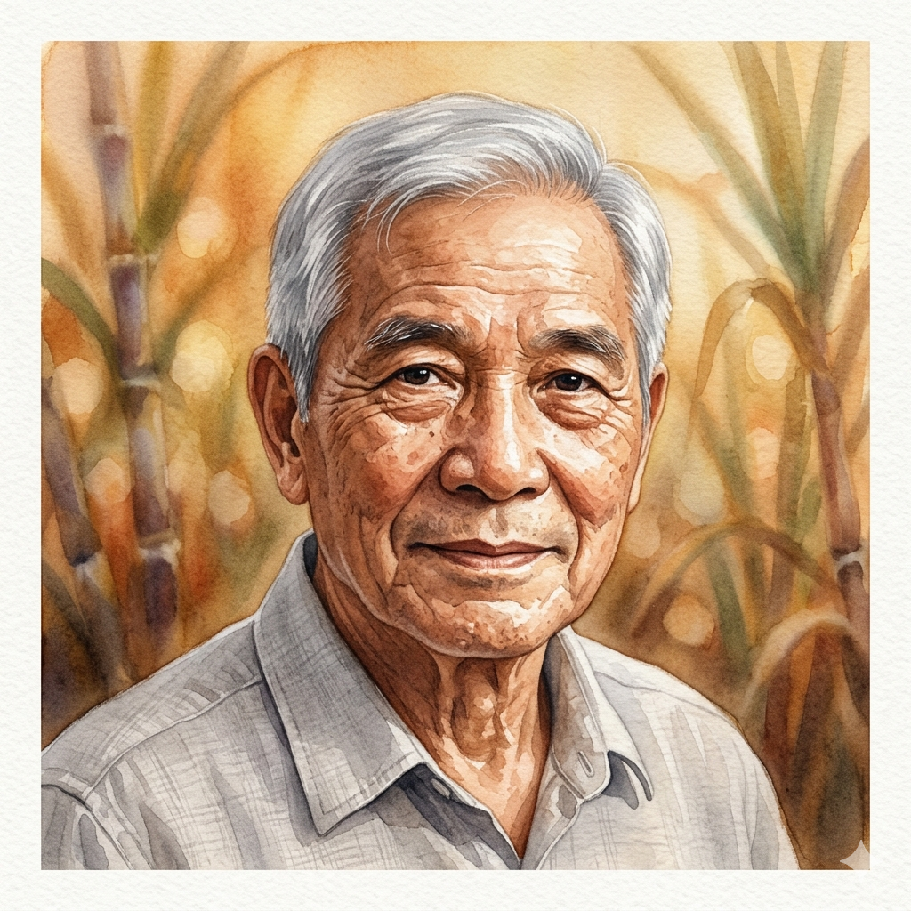

跳過導覽
下一步
9:41
▲▲▲
PROTOTYPE WALKTHROUGH
畫面導覽
點擊手機畫面查看功能說明
LOGIN FLOW
② 開場
② 登入
③ 註冊
EXPLORER FLOW
5
⑤ 首頁
6
⑥ 瀏覽
7
⑦ 文化詳情
8
⑧ AI 問答
9
已收藏 2 個行程
查看
查看
⑨ 我的行程
10
⑩ 行程設定
10
⑩ 行程結果
11
⑪ QR 現場
12
3
行程
12
收藏
5
足跡
⑫ 體驗者檔案
FARMER FLOW
6
體驗者
農民
2
已發布
87
瀏覽
12
預約
⑥ 活動管理
6
⑥ AI 文案
13
2
農場
28
年資
52
歲
⑬ 農民檔案
關閉
前往這個畫面
台灣農業
文化體驗
用 AI 帶你理解、規劃，並親身踏入農業文化
開始探索
早安
探索
農業文化
現在是秋茶季
高山烏龍 正在採收
南投・阿里山・坪林 限時體驗 →
分類探索
全部
稻米文化
原住民祭典
熱帶果物
傳統工藝
本季推薦
全部
高山茶文化
南投 · 秋茶季
池上稻米文化
台東 · 二期收割
阿美族豐年祭
花蓮 · 7–8月
柿子文化
苗栗 · 10–11月
近期農業活動
更多
凍頂烏龍秋茶體驗
南投鹿谷 · 10/1–11/15
進行中
池上稻穗收割節
台東池上 · 10/15–10/31
即將開始
苗栗大湖柿子季
苗栗大湖 · 10/1–11/30
進行中
首頁
瀏覽
掃描
行程
個人檔案
瀏覽所有主題
農業文化
圖書館
體驗者
農民
全部
茶文化
稻米
原住民
果物
工藝
高山茶文化
南投・阿里山・坪林
秋茶季
QR
池上稻米文化
台東・花蓮
秋收
QR
阿美族豐年祭
花蓮・台東
7–8月
柿子文化
苗栗・新竹
10–11月
鳳梨文化
台南・屏東
5–8月
竹藝傳統工藝
南投竹山・嘉義
全年
首頁
瀏覽
掃描
行程
個人檔案
茶
←
高山茶文化
地圖
秋茶季
南投・阿里山
海拔 1000m+
AI 文化摘要
台灣高山茶文化發展於清末，在海拔 1000m 以上的山區種植。每年秋茶季（9–11月），晝夜溫差讓茶葉積累出獨特甘甜與茶香。採茶是純手工作業，一名熟練茶農一天僅能採約 3 公斤，是兼具農業智慧與文化意義的傳統。
資料來源：農業部茶及飲料作物改良場 2023・台灣茶葉產銷年報
現場 QR 導覽 支援
可參與體驗
親手採茶
2–3 小時
製茶體驗
3–4 小時
茶道學習
1.5 小時
茶園導覽
1 小時
最佳造訪時間
春茶
3–5月
夏茶
6–8月
秋茶 ✦ 現在
9–11月
冬茶
11–12月
生成茶文化體驗行程
←
農業文化 AI
線上中
今天 9:41
你好！我是台灣農業文化 AI。問我任何關於台灣農業文化的事吧 🌾
我想了解台灣的茶文化
台灣高山茶文化超過 200 年歷史！最特別的是「高山烏龍」——在海拔 1000m 以上，晝夜溫差讓茶葉發展出獨特甘甜 🍵
每年有四個採收季，秋茶（9–11月）和冬茶最珍貴。
10月去的話適合去哪裡？
10月是秋茶季的黃金期 🍂！
推薦：
•
南投鹿谷
：凍頂烏龍發源地
•
阿里山達邦
：鄒族傳統茶園
•
坪林
：文山包種茶
要幫你生成一個 2 天行程嗎？
生成行程
稻米文化
豐年祭
外國人適合
↑
我的行程
已收藏 2 個行程
秋茶季 · 2天1夜
南投鹿谷 · 阿里山 · 10月
查看
池上稻米文化 · 1天
台東池上 · 10月
查看
首頁
瀏覽
掃描
行程
個人檔案
←
規劃農業文化行程
你想幾月去台灣？
已選 1 個月份
1月
柑橘
2月
油菜花
3月
春茶
4月
梅子
5月
鳳梨
6月
芒果
7月
豐年祭
8月
豐年祭
9月
秋茶
10月
秋茶
11月
柿子
12月
草莓
出發地區
北部
中部
南部
東部
離島
你最感興趣的是？
茶文化
採茶・製茶・茶道
稻米文化
插秧・農村生活
原住民祭典
豐年祭・小米
熱帶果物
採果・農場體驗
幾天的行程？
1天
2天1夜
3天2夜
AI 生成我的行程
←
編輯行程
AI 生成行程
秋茶季 · 2天1夜
10月
東部出發
茶文化
台北
南投鹿谷
阿里山
行程地圖
1
Day 1 — 台北 → 南投鹿谷
08:00
從台北高鐵出發
高鐵台中站轉客運前往鹿谷
導航
⠿
11:00
凍頂茶山 AI 導覽
掃 QR Code 了解凍頂文化起源
QR 導覽
導航
⠿
13:00
農家午餐
茶葉入菜，了解農產食文化
導航
⠿
14:30
手工採茶體驗
親手體驗秋茶採收（限季節）
QR 導覽
導航
⠿
18:00
農村民宿 Check-in
夜間與茶農交流文化故事
導航
⠿
2
Day 2 — 阿里山達邦茶園
07:30
晨間雲霧茶園巡禮
雲海與高山烏龍最美時刻
導航
⠿
10:00
達邦茶園 QR 體驗
鄒族農耕文化 AI 現場導覽
QR 導覽
導航
⠿
13:00
製茶工坊 + 農特產
帶回自己手做的茶葉
導航
⠿
16:00
返台北
高鐵回程
導航
⠿
＋ 新增景點
收藏行程
開始體驗
←
對準景點的 QR Code
點擊螢幕模擬掃描
行程中的 QR 景點
凍頂茶山
達邦茶園 ← 目前
農村民宿
收起
阿里山達邦茶園
海拔 1,400m · 鄒族傳統農地 · 樹齡 80年+
「這裡的茶樹已有80年以上樹齡，是鄒族部落在日治時期保留下來的古老茶園。這片土地，承載著超過三個世代的農耕記憶，也是台灣最具歷史意義的高山茶產區之一…」
詢問 AI
語音導覽
←
個人檔案
體驗者
農民
陳旻妤
體驗者 · 台北
2
收藏行程
5
體驗次數
3
造訪地區
基本資訊
所在地區
台北市
加入平台
2024 年 4 月
偏好文化
茶文化 · 稻米
最近體驗
凍頂秋茶採摘
個人偏好
你喜愛的農業文化類型
茶文化
稻米
原住民祭典
果物農場
傳統工藝
＋ 新增
登出
首頁
瀏覽
掃描
行程
個人檔案
←
農場資料調查
告訴我們你的農場
這些資訊將幫助我們為你配對合適的旅遊者
農場名稱
所在地區
主要作物
茶葉
稻米
柿子
鳳梨
竹筍
芒果
草莓
其他
務農年資
1–5 年
6–15 年
16–30 年
30 年以上
開放體驗時段
週一
週二
週三
週四
週五
週六
週日
農場簡介
（選填）
完成設定，進入農場
←
個人檔案
體驗者
農民

王大明
農民 · 南投縣鹿谷鄉
2
管理農場
28
務農年資
52
歲
基本資訊
所在地區
南投縣鹿谷鄉
加入平台
2023 年 3 月
主要作物
高山烏龍茶
接待體驗人次
320 人次
開放體驗時段
一
二
三
四
五
六
日
10:00–12:00
14:00–16:00
＋ 時段
登出
首頁
瀏覽
掃描
行程
個人檔案
←
AI 農場文案生成
體驗者
農民
輸入產品資訊
產品名稱
產品類型
產品特色
海拔 800m，秋天晝夜溫差大，茶葉甘甜回甘，帶有花香
產品圖片
農場資訊
農場名稱
凍頂春風茶園
地點
南投縣鹿谷鄉
海拔
800–1,000m
耕作歷史
三代 · 60年以上
文化類別勾選
選擇你想呈現的農業文化面向
茶文化傳承
高山農業環境
家族農耕記憶
永續農業實踐
手工製茶工藝
AI 如何生成文案？
系統會根據你填寫的產品特色、農場故事與文化類別，自動生成三種內容：
品牌文案
（吸引旅客）、
產品故事
（說明背後意義）、
產品角色
（IP 形象）。填寫越詳細，生成品質越好。
AI 生成文案、產品故事、產品角色
←
AI 生成結果
編輯活動
AI 生成完成
品牌文案
「凍頂春風茶園，坐落於南投鹿谷 800 公尺的山腰間，三代茶農以手心溫度，守護這片被秋霧輕撫的茶樹。每一片葉，都是大地與人情的交融——帶著花香的甘甜，是秋天最深情的告白。」
產品故事
凍頂烏龍秋茶的故事，從每年九月山上第一陣涼意開始。晝夜溫差讓茶葉放慢生長，把甜分慢慢積在葉芯。老茶農說：「慢一點，才會甜。」這一泡秋茶，是大自然教我們的耐心。
產品角色
凍頂小茶仙 · 阿翠
生長在海拔 800m 茶園的精靈，個性沉穩又帶點溫柔的甘甜。最愛在秋天霧氣剛散的早晨，帶著旅人認識茶樹的一生。口頭禪：「慢慢來，茶香才出得來。」
重新生成
發佈活動
首頁
瀏覽
掃描
行程
個人檔案
我的發布
農場
活動管理
體驗者
農民
2
已發布
87
總瀏覽
12
已預約
發布的活動
已發布
秋茶採摘體驗
南投縣鹿谷鄉 · 10–11月
茶文化
週六日開放
編輯文案
已發布
手工製茶工藝體驗
南投縣鹿谷鄉 · 全年
工藝傳承
假日場次
編輯文案
首頁
瀏覽
掃描
行程
個人檔案
台灣農業
文化體驗
歡迎回來
請登入你的帳號繼續
電子郵件
密碼
忘記密碼？
登入
或
建立新帳號
繼續即表示你同意我們的
服務條款
與
隱私政策
←
建立帳號
點擊上傳頭貼
姓名
電子郵件
密碼
你的使用身份
請選擇一個適合你的角色
體驗者
探索農業文化
規劃旅遊體驗
農民
管理農場資訊
AI 文案生成
開始使用
已有帳號？
返回登入
第一次設定
快速完成，隨時可修改
你對什麼最感興趣？
選擇偏好，讓 AI 為你推薦
最適合的農業文化體驗
偏好完成度
0%
農業文化興趣
（可多選）
點選你感興趣的類型
茶文化
稻米文化
原住民祭典
熱帶果物
傳統工藝
鄉村生活
旅遊風格
（單選）
選擇最符合你的旅遊方式
個人深度體驗
家庭親子旅遊
朋友同行
攝影 & 記錄
完成！開始探索農業文化
跳過，稍後再設定
AI助理
畫面導覽
① 功能導覽
② 開場畫面
② 登入畫面
③ 註冊＋身份選擇
④ 偏好調查（體驗者）
④ 農場資料調查（農民）
⑤ 首頁
⑥ 分類瀏覽（體驗者）
⑥ 農場活動管理（農民）
⑥ AI 文案生成
⑦ 文化詳情
⑧ AI 問答
⑨ 我的行程
⑩ 行程設定
⑩ 行程結果
⑪ QR 現場體驗
⑫ 體驗者個人檔案
⑬ 農民個人檔案
點選名稱或在手機
畫面上點互動元素
來切換畫面